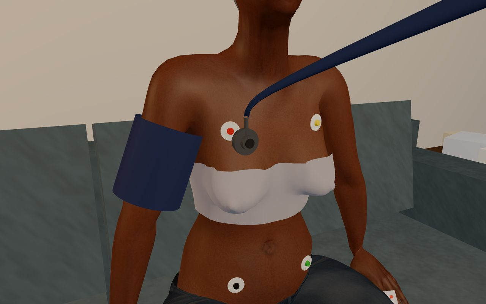
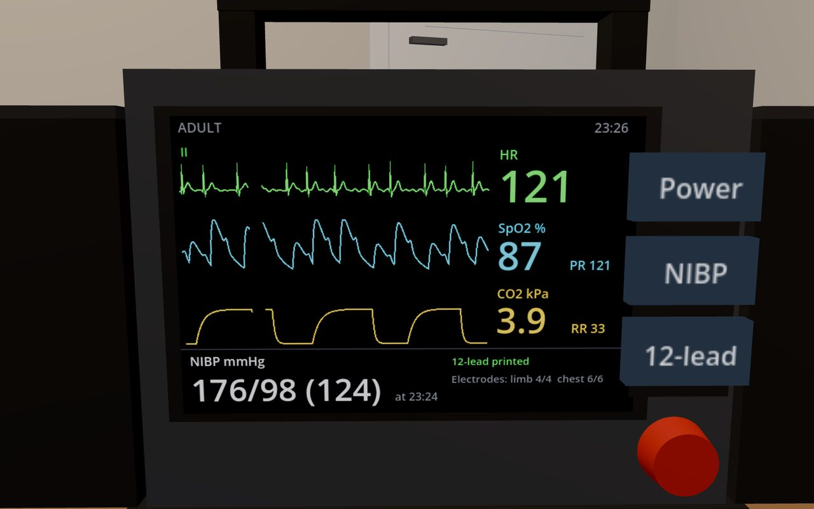
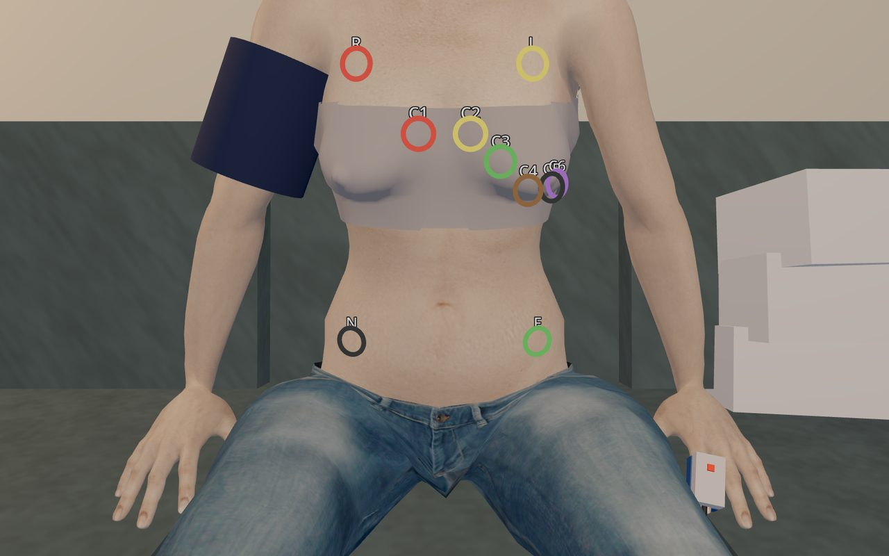
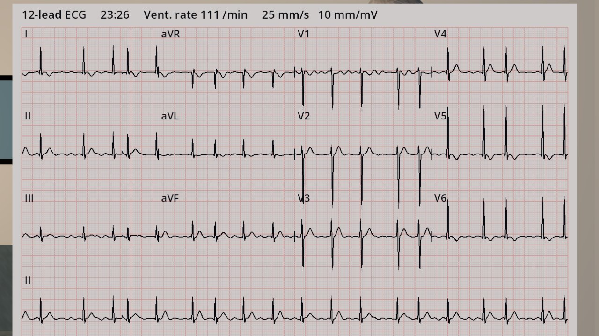
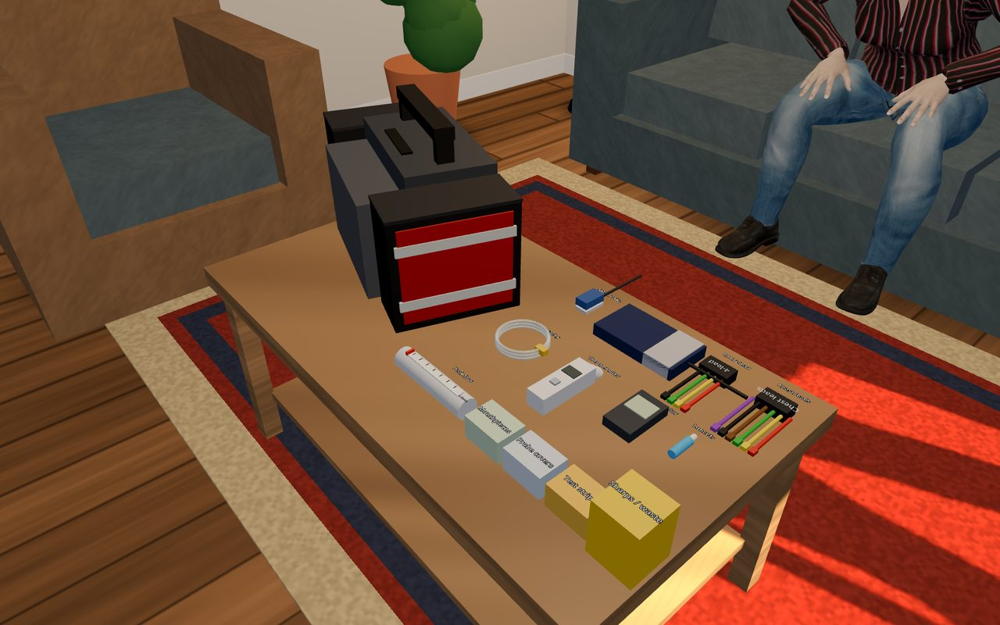
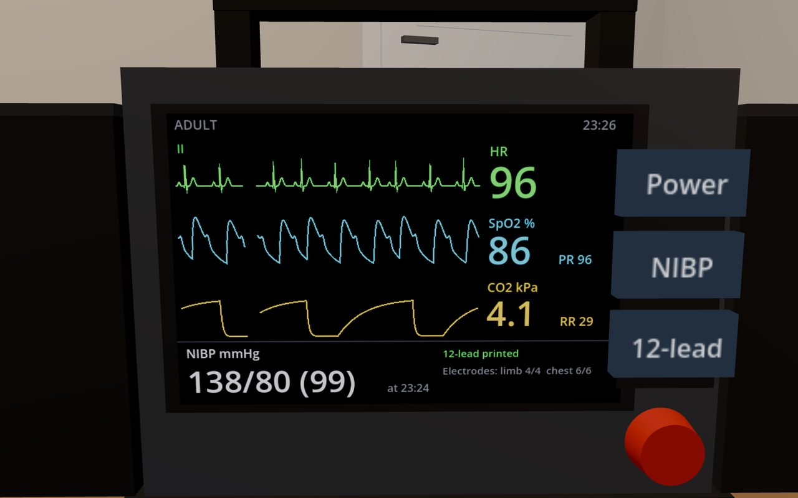
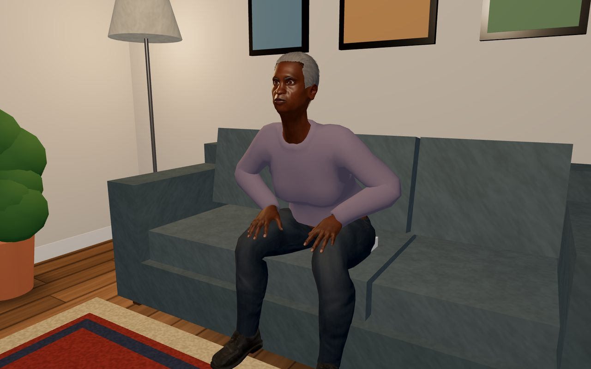

PATIENTS
Look, listen, feel
Patients who look and sound unwell: posture, work of breathing, skin colour, cyanosis, recession, a raised JVP, a pulse you can feel and a capillary refill you can time.
Walk into a real home, assess a real-looking patient, hear the patient and family answer in their own voices, examine them with real kit (stethoscope, monitor, 12-lead ECG and more), and get a debrief that explains what was there to find. Standalone on Meta Quest 3, no internet needed. Written by a paramedic.
Most pre-hospital assessment happens in people's homes, with family, clutter and distractions. The simulator puts you there, as often as you like, with consistent scenarios and feedback.
Patients who look and sound unwell: posture, work of breathing, skin colour, cyanosis, recession, a raised JVP, a pulse you can feel and a capillary refill you can time.

Ask the patient or their family and hear them answer out loud, each in their own voice. A breathless patient speaks in short phrases, stopping to catch their breath. What you ask opens up what you can ask next.

Clues in the home, like the medicines box, the pillows, and a family member who knows more than the patient can say.
Pick up the kit and use it on the patient with either hand. Nothing is read out for you: the monitor only shows what you've actually connected, and what you hear through the stethoscope is for you to interpret.

Fourteen listening spots, front, sides and back, from the apices to the bases. Each one plays its own breath sounds in time with the patient's breathing: crackles, wheeze, reduced air entry. Through clothes, it's muffled.

SpO2 with a pleth trace, non-invasive blood pressure, ECG and nasal capnography with EtCO2 and respiratory rate. The heart rate on screen is the same heartbeat you feel at the wrist.

Four limb and six chest electrodes in UK (IEC) colours, with highlighted positions from the anatomical landmarks, including V4 to V6 placed discreetly under the bra. Then record and read a printed 12-lead.

Everything you'd carry in, on the coffee table:

Grip to pick up, trigger to use, let go on the patient to leave a sensor on. Left- or right-handed.

Waveforms come from the patient, not a loop: an irregular rhythm stays irregular, and an obstructed patient's capnogram slopes.

Two breathless patients at home, each with their own voice, signs, breath sounds and observations. More on the way.
Each scenario follows the shape of a real job, from the front door to the debrief.
Walk in and form a first impression: how the patient looks, how they're breathing, who else is in the room.
Kneel to the patient, look, listen and feel, take a history from the patient and family, and use the kit: stethoscope, monitor, ECG and obs.
Say out loud what you think is going on and why, then choose your impression.
See what was there to find, what you found, and why each finding matters. Then run it again.

Form your impression, then see what was available in the scenario and what you checked, with why each finding matters.
It reports rather than scores. Expectations differ between services and courses, so the debrief explains the clinical picture and leaves the judgement to you and your educators. Referenced to JRCALC and NICE guidance.
An instructor app on a laptop connects to the headset over a phone hotspot or local Wi-Fi. No internet, no accounts, no infrastructure.

Every scenario is written by a paramedic. Patient responses are fixed in advance: nothing is made up on the fly.
The debrief shows what was there to find and why it matters.
Standalone headset, fully offline. No patient data, no accounts, no Wi-Fi needed.
The simulator is built with Claude, Anthropic's AI, under a paramedic's clinical direction and review. The voices are synthetic. This website's text was written by Claude too.
Comfort settings for people new to VR, seated play, and kneeling to the patient's level.
Practise forming a first impression in a realistic setting, as often as you like.
Repeatable scenarios with a live instructor view, ready for teaching sessions.
CPD that fits around shifts, on a headset that needs no IT setup.
The simulator is in active development, with two scenarios and a full set of assessment kit working, and more on the way. If you're an educator, a service or a clinician interested in trying it or helping shape it, get in touch.